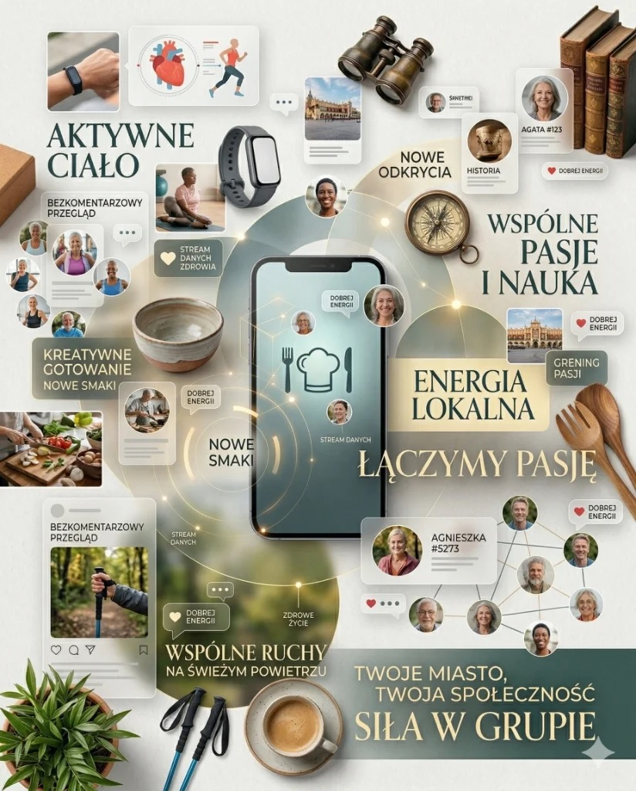

Media społecznościowe mogą ułatwiać kontakt, dostęp do grup zainteresowań i naukę obsługi nowych narzędzi. Nie są jednak leczeniem samotności ani automatycznym treningiem mózgu. Korzyść zależy od sposobu używania, jakości kontaktów, ustawień prywatności i tego, czy aplikacja nie zabiera snu, czasu oraz uwagi.
Szybka odpowiedź
Badania osób starszych łączą korzystanie z mediów społecznościowych z większym kontaktem i niekiedy mniejszą samotnością, ale wyniki badań podłużnych i interwencyjnych są mieszane. Traktuj aplikacje jako uzupełnienie rozmów i spotkań, nie trening mózgu ani leczenie samotności. Włącz prywatność i uwierzytelnianie dwuskładnikowe; ogranicz używanie, jeśli pogarsza sen, nastrój albo kontrolę czasu.
Kluczowe wnioski
Najważniejsze są jakość kontaktu, bezpieczeństwo konta i wpływ korzystania na codzienne funkcjonowanie.
- Związki obserwowane w badaniach nie dowodzą, że sama aplikacja poprawia nastrój lub funkcje poznawcze.
- Kontakt online może uzupełniać relacje na żywo, ale nie powinien ich wypierać.
- Prywatne konto, unikalne hasło i 2FA ograniczają część ryzyka, ale nie eliminują oszustw.
Zacznijmy od mitu, który krąży najczęściej?
Wiek nie przesądza, czy dana platforma będzie przydatna. Ważniejsze jest to, po co jej używasz: do rozmowy z bliskimi, udziału w grupie zainteresowań, śledzenia lokalnych wydarzeń czy bezwiednego przewijania. Te sposoby używania mają inne konsekwencje, dlatego nie da się uczciwie ocenić wszystkich mediów społecznościowych jednym zdaniem.
Wiem co myślisz. Media społecznościowe to miejsce, gdzie ludzie pokazują co zjedli na obiad, kłócą się o politykę i wrzucają zdjęcia wakacji. Po co mi to?
Platformy łączą wyszukiwanie, kontakt, rozrywkę, reklamy i rekomendacje. Możesz obserwować wybrane konta, wyciszać tematy i zgłaszać materiały, ale nie programujesz całego strumienia. Zawsze może pojawić się reklama, treść sponsorowana albo rekomendacja, której nie wybierałeś.
Co nauka mówi o starszych dorosłych i mediach społecznościowych?
Przegląd systematyczny objął 64 prace o psychospołecznych skutkach używania mediów społecznościowych przez osoby starsze. Badania przekrojowe częściej pokazywały korzystne związki, natomiast wyniki badań podłużnych i interwencyjnych były mieszane. To ważne ograniczenie: korelacja nie pozwala uznać aplikacji za przyczynę lepszego samopoczucia.
Przegląd 64 badań nie daje jednej odpowiedzi „pomaga” albo „szkodzi”. Większość danych obserwacyjnych pokazuje związki, a nie skutek wywołany przez aplikację; badania interwencyjne i podłużne dawały mniej jednolite wyniki.
Najmocniejszy wniosek nie brzmi „media społecznościowe działają”, lecz: wynik zależy od rodzaju badania i sposobu korzystania. Pozytywne korelacje z kontaktem lub samopoczuciem nie są tym samym co potwierdzony efekt interwencji.
Przegląd systematyczny 64 badań, International Psychogeriatrics.Wyników nie należy sprowadzać do jednej obietnicy. Część badań obserwowała samotność, inne depresję, wsparcie społeczne albo funkcje poznawcze; różniły się też platformy i intensywność używania. Dlatego praktyczna ocena powinna dotyczyć konkretnego celu i własnej reakcji, a nie samego faktu posiadania konta.
Samotność po 50-tce to nie kaprys — to epidemia z konsekwencjami zdrowotnymi?
Samotność jest realnym problemem zdrowia publicznego, lecz aplikacja nie zastąpi relacji i profesjonalnej pomocy. Kontakt online może podtrzymać więź, gdy rodzina mieszka daleko albo wyjście z domu jest trudne. Jeśli poczucie izolacji utrzymuje się, warto równolegle szukać rozmów telefonicznych, spotkań lokalnych lub wsparcia specjalisty.
Tutaj muszę powiedzieć coś ważnego. Samotność po 50-tce, a szczególnie po przejściu na emeryturę, jest jednym z poważniejszych problemów zdrowotnych współczesnych społeczeństw. WHO ogłosiła ją w 2023 roku kryzysem zdrowia publicznego.
I tutaj media społecznościowe mają realną rolę do odegrania. Nie jako zastępstwo kontaktu face-to-face, ale jako jego uzupełnienie. Mostek, który działa, kiedy wyjście jest trudne, kiedy rodzina daleko, kiedy znajomi są zajęci.
Źródło: Social Media Communication and Loneliness Among Older Adults: The Mediating Roles of Social Support and Social Contact. PubMed 33284972.
Media społecznościowe a mózg — to się opłaca?
Nie ma podstaw, by nazywać przewijanie aplikacji treningiem mózgu. Badania obserwacyjne mogą łączyć aktywność społeczną online z lepszym wynikiem poznawczym, ale nie rozstrzygają kierunku zależności: osoby sprawniejsze poznawczo mogą po prostu częściej korzystać z technologii. Dla mózgu lepiej udokumentowane są ruch, sen, nauka i realne kontakty.
To jest ten argument, który przekonuje mnie najbardziej. I który jest najmniej oczywisty.
Nauka obsługi aplikacji wymaga uwagi i pamięci roboczej, ale to nie dowodzi długotrwałej poprawy funkcji poznawczych. Warto uczyć się nowych narzędzi dla samodzielności i kontaktu, bez obietnicy działania terapeutycznego.
Źródło: Internet-Based Social Activities and Cognitive Functioning, JMIR Aging 2024.
Nowa aplikacja może być wyzwaniem poznawczym, lecz nie jest odpowiednikiem nauki języka ani terapii. Jeżeli celem jest sprawność mózgu, traktuj technologię jako jedno z narzędzi obok aktywności fizycznej, snu, rozmów i uczenia się wymagającej umiejętności.
Nie musisz nic o sobie pisać. Serio?
Publikowanie nie jest warunkiem korzystania z platformy. Możesz obserwować wybrane profile i nie dodawać własnych postów, ale samo konto nadal gromadzi dane o aktywności. Przed rejestracją sprawdź widoczność profilu, możliwość wyszukiwania po numerze telefonu oraz dostęp aplikacji do kontaktów, zdjęć i lokalizacji.
To jest chyba najczęstszy powód rezygnacji. Nie chcę ujawniać swojego życia. Nie chcę żeby wszyscy wiedzieli co robię. Nie chcę odpisywać ludziom.
I to jest całkowicie uzasadnione. I całkowicie niekonieczne. Pozwól, że wyjaśnię:
- Sprawdź zasady nazwy konta. Wymagania różnią się między platformami i mogą obejmować nazwę używaną na co dzień, datę urodzenia albo telefon. Nie podawaj fałszywych danych wbrew regulaminowi; ogranicz publiczną widoczność informacji, których nie chcesz ujawniać.
- Możesz ograniczyć konto, lecz tryb prywatny nie ukrywa wszystkiego. Nazwa użytkownika, zdjęcie profilowe lub część informacji mogą pozostać widoczne, a zaakceptowani obserwujący zobaczą publikacje.
- Nie musisz nic publikować. Możesz być wyłącznie obserwatorem. To się nazywa „ciche konto” — i większość ludzi tak zaczyna.
- Nie musisz odpisywać. Sam wybierasz, czy reagujesz na wiadomość; podejrzane prośby zgłaszaj i blokuj.
- Możesz wyciszać i blokować konta oraz część tematów, lecz nie daje to pełnej kontroli nad reklamami i rekomendacjami.
Wybierz platformę odpowiadającą jednemu celowi, sprawdź regulamin nazwy, ustaw prywatność i 2FA, a następnie obserwuj kilka zweryfikowanych źródeł. Po tygodniu przejrzyj uprawnienia aplikacji i usuń konta, które pogarszają jakość strumienia. Algorytm nadal może się mylić.
Bezpieczeństwo — co tak naprawdę warto wiedzieć?
Najczęstsze ryzyka to przejęcie konta, fałszywe profile, linki wyłudzające dane i presja na szybki przelew. Ustaw unikalne hasło oraz 2FA, ogranicz widoczność profilu i nigdy nie podawaj kodu logowania. Wiadomość od znajomego z prośbą o pieniądze potwierdź innym kanałem, najlepiej telefonicznie.
Ryzyka nie da się sprowadzić do poziomu „jak e-mail”, bo zależy od platformy, ustawień i rodzaju ataku. Największą różnicę robią unikalne hasło, 2FA, aktualizacje oraz zasada: żadnego przelewu lub kodu po samej wiadomości w aplikacji.
Kiedy media społecznościowe przestają pomagać?
Jeśli po korzystaniu regularnie czujesz napięcie, porównujesz się z innymi, gorzej śpisz albo łapiesz się na automatycznym scrollowaniu bez celu, potraktuj to jako sygnał do korekty. Zostaw profile edukacyjne i kontaktowe, wycisz treści konfliktowe, ustaw limit czasu i sprawdź po tygodniu, czy nastrój oraz sen są lepsze.
Zasady, które chronią skutecznie
- Nie dodawaj do kontaktów i nie akceptuj zaproszeń od osób których nie znasz. Jeśli konto wygląda podejrzanie (nowe, bez zdjęć, pierwsza wiadomość to prośba o pieniądze) — ignoruj i zablokuj.
- Nie otwieraj linku z nieoczekiwanej wiadomości. Wejdź do usługi przez zapisaną aplikację lub samodzielnie wpisany adres.
- Nie podawaj hasła, pełnych danych karty, PESEL ani kodu autoryzacyjnego osobie kontaktującej się przez wiadomość.
- Włącz 2FA, najlepiej aplikacją uwierzytelniającą lub kluczem bezpieczeństwa, jeśli platforma je obsługuje.
- Nie używaj tego samego hasła co do banku czy e-maila.
Historia postów ani realistyczne zdjęcie nie potwierdzają tożsamości — przejęte konto może wyglądać wiarygodnie. Sygnały alarmowe to presja czasu, tajemnica, prośba o kod, przelew, kartę podarunkową lub przejście poza platformę. Skontaktuj się ze znajomym znanym numerem i niczego nie wysyłaj przed potwierdzeniem.
Co konkretnie możesz tam znaleźć — tabela platform?
Wybierz platformę według zadania: Facebook częściej służy grupom i wydarzeniom, Instagram obrazom, TikTok krótkim rekomendowanym filmom, a YouTube dłuższym materiałom. Na każdej występują reklamy i treści niezweryfikowane, więc nazwa platformy nie zastępuje oceny autora, źródeł i ustawień prywatności.
| Platforma | Co tu znajdziesz | Szczególnie dobre dla |
|---|---|---|
| Grupy tematyczne (fitness, hobby, regionalne), kontakt z rodziną za granicą, wydarzenia lokalne, artykuły, humor. Najlepszy do znajomych i grup. | Utrzymania relacji, grup zainteresowań, wiadomości lokalnych. | |
| Zdjęcia, konta o zdrowiu, fitnessie, podróżach, sztuce, naturze. Mniej tekstu, więcej estetyki. Świetny do inspiracji wizualnych. | Motywacji do aktywności, inspiracji, śledzenia tematów. | |
| TikTok | Krótkie filmy o zdrowiu, ćwiczeniach, gotowaniu, historii, nauce i humorze. Rekomendacje szybko reagują na zachowanie, ale nie oceniają prawdziwości materiału. | Edukacji w przystępnej formie, zabawy, odkrywania nowych tematów. |
| YouTube | Dłuższe filmy instruktarzowe, dokumenty, wykłady, poradniki. Technicznie to nie media społecznościowe, ale działa podobnie. | Nauki, medycyny, fitnessu, podróży, dokumentalnych. |
TikTok po 50-tce — ale skąd wiem co tam jest?
TikTok miesza materiały rozrywkowe, edukacyjne, reklamy i treści niezweryfikowane. Algorytm szybko dopasowuje rekomendacje do zachowania, ale popularność filmu nie potwierdza jego prawdziwości. Poradę zdrowotną sprawdź u autora z możliwymi do potwierdzenia kwalifikacjami i w niezależnym źródle, zanim zmienisz leczenie, dietę lub suplement.
TikTok ma opinię platformy dla nastolatków tańczących przy głośnej muzyce. I tak — to jest część TikToka. Ale jest też cały inny TikTok.
FitTok, MedTok, ScienceTok, HistoryTok, CookingTok — to są nieformalne nazwy społeczności wewnątrz TikToka, gdzie lekarze wyjaśniają choroby, dietetycy obalają mity, fizycy tłumaczą kwantową mechanikę w 60 sekund, szefowie kuchni pokazują przepisy a historycy opowiadają jak ludzie spędzali święta 100 lat temu.
Licznik wyświetleń hashtagu zmienia się i nie mierzy jakości wiedzy. Popularne materiały o zdrowiu mogą pochodzić zarówno od specjalisty, jak i sprzedawcy suplementu, dlatego sprawdź autora, konflikt interesów i źródło pierwotne.
Algorytm wykorzystuje między innymi czas oglądania, reakcje i pomijanie materiałów. Może zwiększyć udział wybranego tematu, ale nie gwarantuje, że inne treści znikną ani że rekomendacje będą działać na Twoją korzyść. Długi czas oglądania sensacyjnego filmu bywa odczytany jako zainteresowanie.
Grupy na Facebooku — jak znaleźć swoje plemię?
Grupa tematyczna może pomóc znaleźć lokalne zajęcia, wymienić doświadczenia albo utrzymać kontakt wokół hobby. Przed dołączeniem sprawdź zasady, aktywność moderatorów i to, czy administratorzy usuwają reklamy oraz szkodliwe porady. Historie innych osób mogą podsunąć pytania, lecz nie zastępują diagnozy ani zaleceń dla Ciebie.
Jedną z najbardziej niedocenianych funkcji Facebooka są grupy tematyczne. To zamknięte lub otwarte społeczności skupione wokół jednego tematu. Fitness po 50-tce. Bieganie seniorskie. Miłośnicy Nordic Walking. Zdrowe gotowanie. Ogrodnicy. Podróżnicy po Azji. Fotografowie amatorzy. Ludzie, którzy przetrwali rak. Ludzie, którzy budują domki na drzewach.
Aktywność grup jest różna: część ma moderację i lokalne wydarzenia, inne są pełne reklam lub porad bez źródeł. Przeczytaj kilka dni dyskusji przed udostępnieniem danych. Jeśli szukasz kontaktu, porównaj grupę z klubem, biblioteką, uniwersytetem trzeciego wieku lub zajęciami na żywo.
Źródło: The relationships between social internet use, social contact, and loneliness in older adults. Nature 2025.
Obalamy mity?
Najczęstszy błąd to zastępowanie jednej skrajności drugą: media społecznościowe nie są ani wyłącznie szkodliwe, ani z definicji korzystne dla osób po 50-tce. W tabeli rozdzielamy to, co użytkownik może kontrolować, od obietnic, których badania nie potwierdzają. Efekt zależy od celu, treści i czasu.
| MIT | FAKT |
|---|---|
| To jest dla młodych. Nie dla mnie. | Platformy są dostępne w każdym wieku. Badania pokazują możliwe korzyści i ryzyka, ale nie dowodzą większego efektu zdrowotnego niż u młodszych. |
| Muszę wszystko o sobie ujawniać. | Nie musisz publikować, ale wymagania nazwy i danych różnią się między platformami. Konto prywatne ogranicza widoczność, lecz nie ukrywa wszystkich danych profilowych. |
| To niebezpieczne, będą kraść moje dane. | Ryzyka nie da się porównać jednym rankingiem. Prywatność, unikalne hasło i 2FA zmniejszają ryzyko przejęcia konta, ale nie eliminują wyłudzeń. |
| Tam są tylko głupoty i kłótnie. | To jak powiedzieć, że w telewizji są tylko reklamy. Są i głupoty, i wartościowa treść. TikTok z edukacją zdrowotną, Facebookowe grupy wsparcia, instagramowe wykłady o historii — to istnieje. Trzeba tylko wiedzieć jak szukać. |
| To uzależnia i sprawia, że się gorzej czujemy. | Nadmierne używanie może pogarszać sen, nastrój i kontrolę czasu także po 50-tce. Korzystne związki z kontaktem społecznym nie oznaczają leczenia depresji lub samotności. |
| Jak się nie znam na technologii, to się nie nadaję. | Tempo nauki jest indywidualne. Zacznij od jednej funkcji, zapisz kroki logowania i poproś zaufaną osobę o pokazanie ustawień prywatności bez udostępniania jej hasła. |

Na koniec — bo to jest najważniejsze?
Oceń platformę po tygodniu według trzech pytań: czy ułatwiła wartościowy kontakt, czy znalazłeś przydatną informację i czy nie pogorszyła snu lub nastroju. Jeśli bilans jest ujemny, wycisz rekomendacje, usuń aplikację z ekranu głównego albo zrezygnuj. Nie masz obowiązku korzystania z żadnej platformy.
Nie mówię, że masz spędzać na Instagramie 4 godziny dziennie. Mówię, że 20–30 minut z dobrą treścią, którą sam/a wybrałeś — to jest rozrywka, edukacja i kontakt społeczny w jednym. Tyle samo, ile sprzątasz kuchnię. I z lepszymi skutkami dla nastroju.
Wiek to nie powód do pomijania tego co nowe. Nowość jest tym co trzyma mózg sprawnym. Widać to w badaniach, widać to u ludzi. Ci którzy się adaptują, którzy próbują, którzy są ciekawi — starzeją się zdrowiej.
„Korzystanie z Internetu jest związane z niższym poziomem depresji i samotności, wyższym zadowoleniem z życia, poczuciem celu i kapitałem społecznym. Postawy starszych dorosłych wobec technologii często odzwierciedlają mit, że są niezdolni do nauki i niemotywowani do korzystania. Badania temu przeczą. ”
— Chopik W.J. — The benefits of social technology use among older adults are mediated by reduced loneliness. PMC5312603Spróbuj. Tydzień. Tylko obserwować. Znajdź jedno konto, które Cię autentycznie interesuje — o sporcie, zdrowiu, historii, przyrodzie — i popatrz przez tydzień. Potem zdecyduj.
Dawać sobie prawo do próbowania — to jedna z najzdrowszych rzeczy jakie można robić po pięćdziesiątce.
Jeśli chcesz połączyć korzyści cyfrowe z realnym działaniem, zobacz tekst Siłownia nie jest dla mięśni. Jest dla ludzi. oraz artykuł Dzieci patrzą na Ciebie, który pokazuje jak codzienny wzorzec przenosi się na rodzinę.
Dla utrzymania regularności pomocne będą też strategie z materiału Motywacja zniknęła oraz szersza perspektywa zdrowego starzenia z artykułu Healthspan, nie lifespan.
Źródła i linki
Źródła i linki
Najczęściej zadawane pytania?
Czy media społecznościowe po 50 pomagają czy szkodzą psychice?
Mogą działać w obie strony: wspierać kontakt i motywację, ale też nasilać porównywanie i stres. Kluczowe jest świadome korzystanie i higiena cyfrowa.
Jak ograniczyć scrollowanie, żeby nie tracić energii?
Dobrze działa ustawienie limitów czasu, wyciszenie części powiadomień i konkretne pory sprawdzania aplikacji. Małe granice zwykle szybko poprawiają samopoczucie.
Jak używać social mediów po 50 mądrze i na swoją korzyść?
Warto obserwować profile edukacyjne, ruchowe i wspierające, a ograniczyć treści wywołujące napięcie. Jakość treści jest ważniejsza niż czas online.
Jak wdrożyć to po 50-tce krok po kroku?
Ustaw prywatność i 2FA, wybierz jeden konkretny cel, obserwuj kilka zweryfikowanych profili i po tygodniu oceń wpływ na kontakt, sen oraz nastrój.